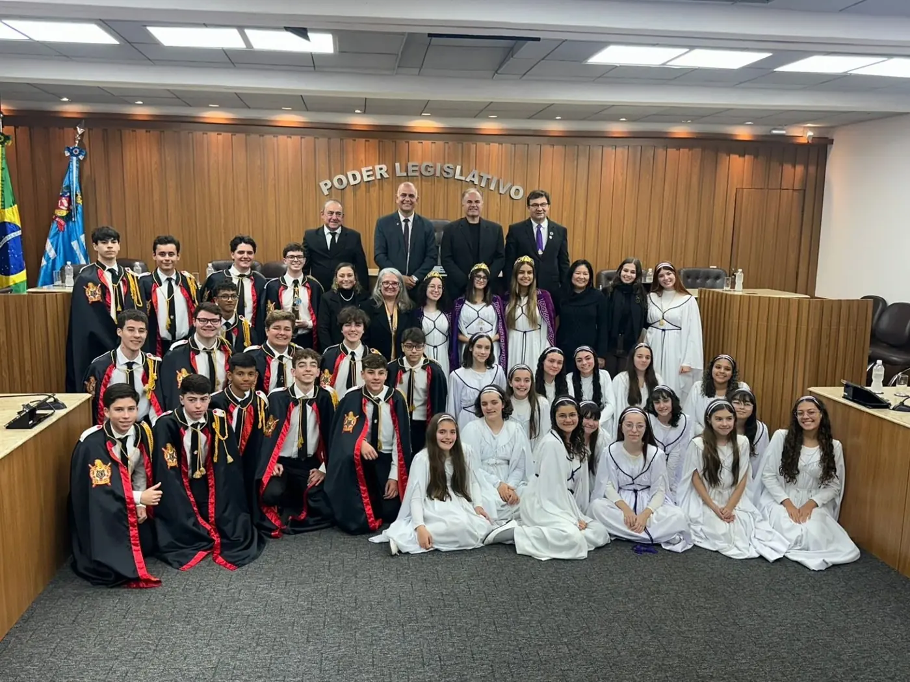

City Council honors DeMolays and Job's Daughters in a solemn session
The City Council chamber hosted a solemn session dedicated to the young members of the Order of DeMolay and Job's Daughters, in recognition of their social and civic work in the city.
In their ceremonial dress, DeMolays and Job's Daughters took the front of the chamber. Representatives of the chapters and Bethels received motions of praise and diplomas from the councilors.
The tribute reinforces the public image of the youth orders as schools of citizenship that form young people committed to their community.
Families and Masons who attended highlighted the importance of public authorities recognizing the volunteer work done by young people.